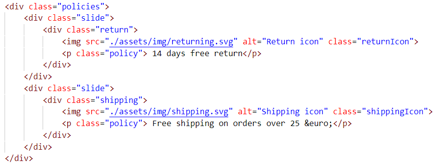
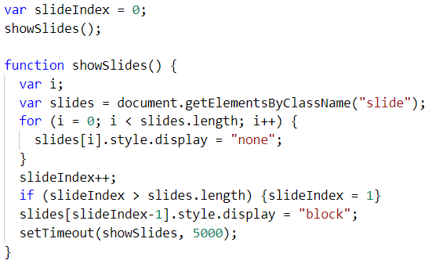

Kort om projektet
Dette projekt blev lavet i min fritid. Det er en webshop forside til en imaginær spilbutik.
Besøg websitet
Dette projekt blev lavet i min fritid. Det er en webshop forside til en imaginær spilbutik.
Besøg websitetDette projekt blev jeg tildelt, som en opgave af et praktiksted, som jeg søgte. Opgaven gik ud på at designe og kode en forside til en webshop af eget valg. Siden skulle være responsiv, og dette blev løst ved brug af media queries og ved en laptop-first tilgang. Jeg udfordrede mig selv i mine designkompetencer, hvor jeg selv synes jeg fik lavet noget, der var lækkert at se på.
I kodning af sitet blev der arbejdet med mine frontendkompetencer i HTML, CSS og JavaScript. For at udfordre mig selv med at bygge JS op fra bunden lavede jeg et "slideshow", som skulle udskifte et element i HTML med et andet. Dette blev gjort ved at lave et "for loop", som hver femte sekund skulle loop igennem de to elementer og skiftevis tilføje "none" og "block" på display-stylingen.
 